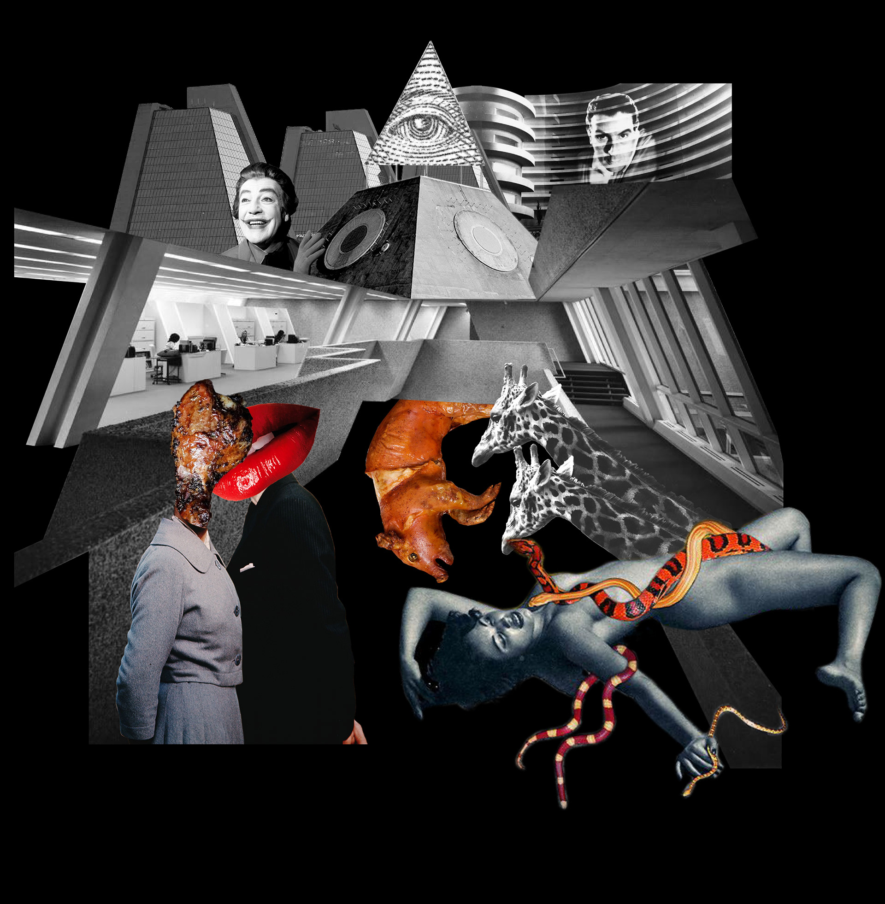
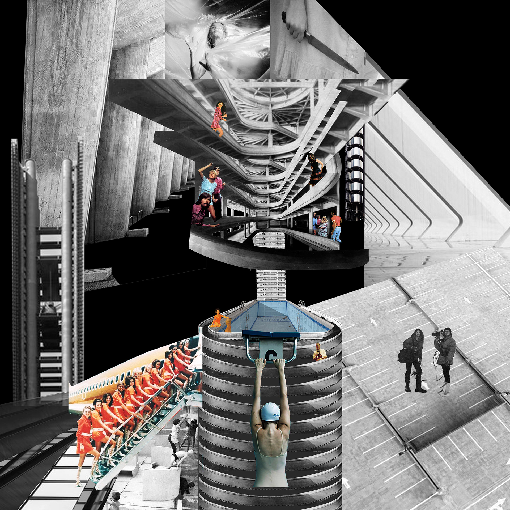
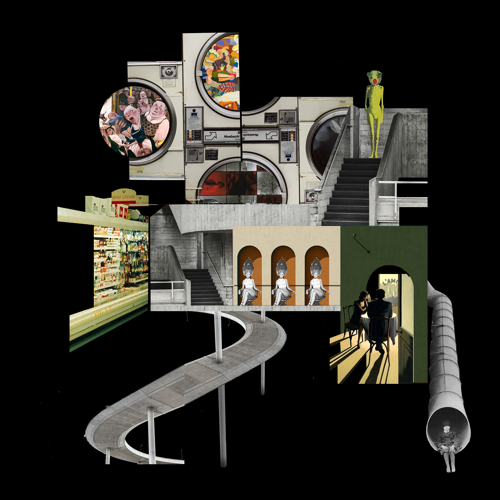
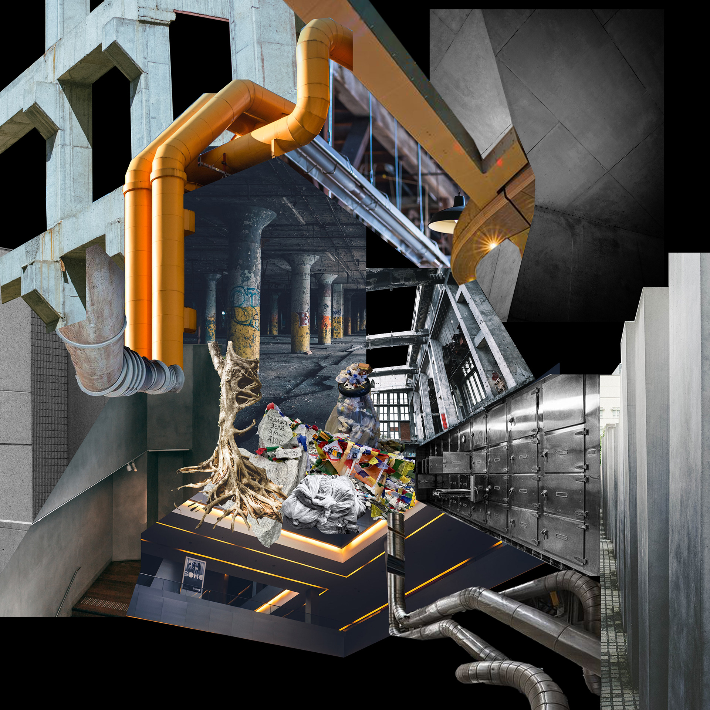
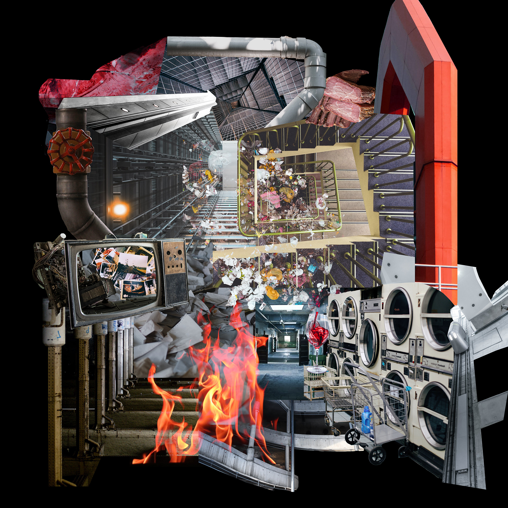
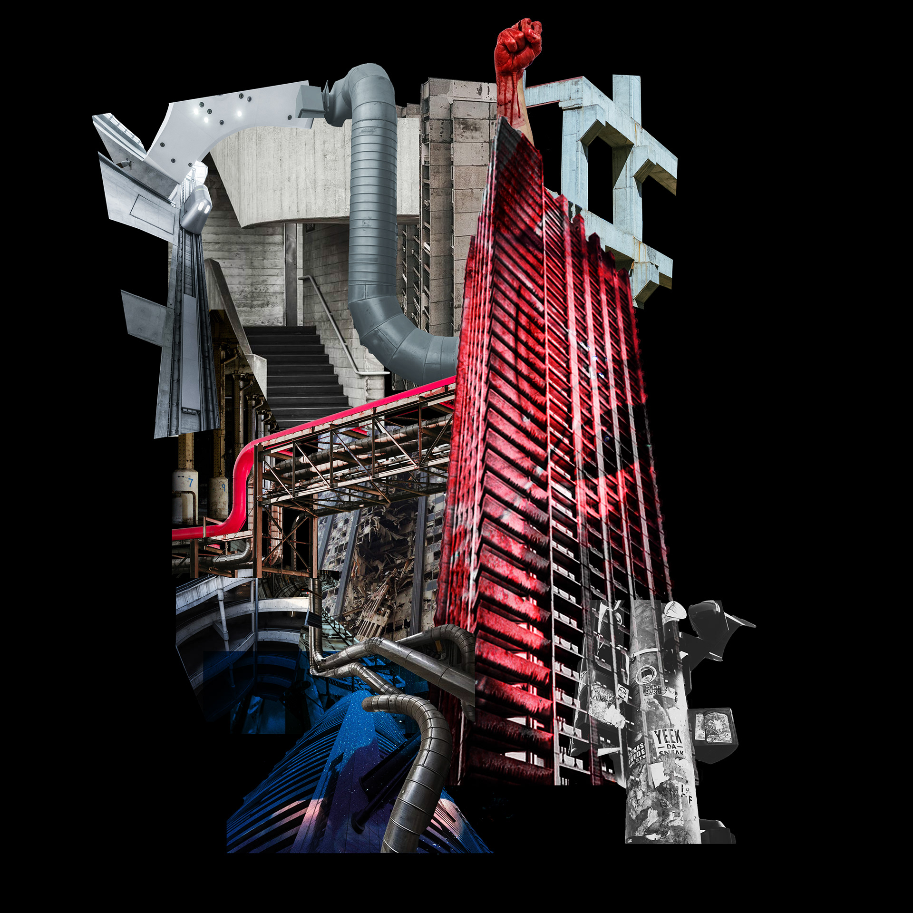

high-rise
High-Rise literally embodies a dystopian vision—an immense 40-level complex accommodating 2000 residents, intentionally disconnected from the outside world. Modern-day individuals, burdened with their worries and tensions, converge within this vertically compact structure. Various events unfold within the high-rise, triggered by something as mundane as a malfunctioning elevator, spreading like a malignant force throughout the entire building and its inhabitants. In the realm of contemporary architecture, these structures often give rise to unique social behaviors, rendering redesign seemingly futile. The best of them, or rather the worst, have met explosive fates witnessed by us all. Leveraging physical references to the high-rise, our collage aims to capture the prevailing human spirit amidst such challenging circumstances.






I work across architecture, scenography, and design. I'm interested in how people experience space, especially in cities, and how stories can change the way a place is perceived. For me, projects are often a way to investigate a question and understand a subject rather than arrive at a fixed answer.